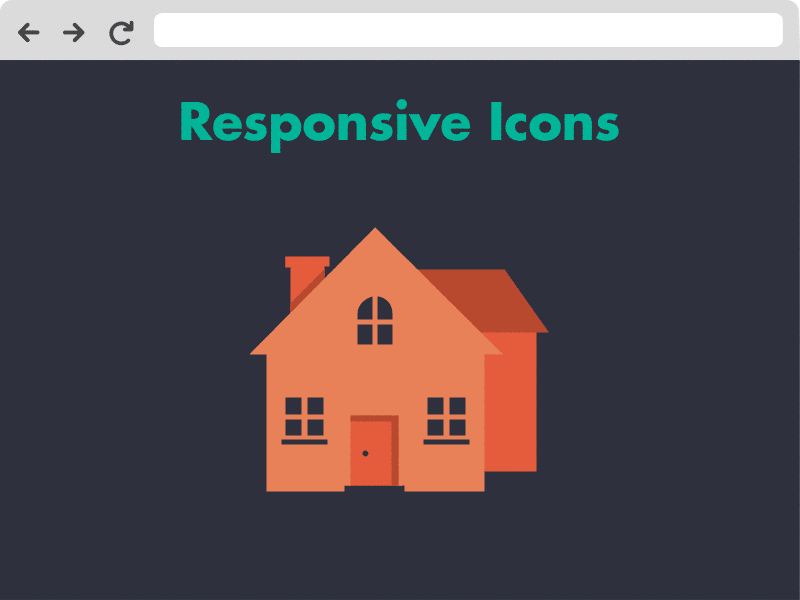

FULL SCREEN NAVIGATION
WHERE DID THE MENU GO
In the 29 years that the world wide web has been around, it has experienced several creative developments. Most recently with the increase of mobile devices using the internet, we have adapted to using hamburger icons as buttons to minimize menus and maximize information that the user receives.
Hamburger icons were so popular that even desktop versions of websites began using the hamburger icon so the user can more freely have access to the page with little to no clutter. This minimalistic approach began to show up in even the most popular of websites to minimize the space taken up by menus. Eventually bigger name sites like Facebook started showing up with no navigation menus in site.
COMPETING WITH THE HAMBURGER ICON

Click the hamburger icon to reveal Facebook's homepage and notice it's limited to only a sign up and login form and three buttons to help the user login.
Reducing the amount of content on a screen as well as the invention of responsive web design in 2010 and media queries in 2012 has made it easier for desktop websites to compete with and even complement the mobile versions. Nonetheless, many web developers still found themselves taking menu design to the extreme to compete.
No matter how big and stylized a menu gets, you are still left with a bunch of buttons that take you to the same boring places. Instead, what you can do is incorporate your brand into the menu. This could mean putting in your logo, contact information, and social media links.
HOW TO ALIGN LOGO WITH NAVIGATION BAR
The video above by Ali Hossain shows how to add a logo to the navigation menu. His preferred alignment method, which he considers the "right" way, is to add the logo to the center of the navigation menu. However, this involves floating some of the individual li nth child elements to the left. Another approach would be to float the image to the left and leave the nav elements to their default position.
WHERE DO WE GO FROM HERE
We certainly don't mind straying far from the realm of possibilities with when it comes to technology and the internet is no exception. As recently as 2018, Google implemented a virtual reality feature for people who browse the internet with such capable devices. Soon we will be able to see websites in Augmented Reality, which is a virtual reproduction of information that can only be loaded at specific real world coordinates. Imagine having to go to a specific place in the real world just to view a web page?